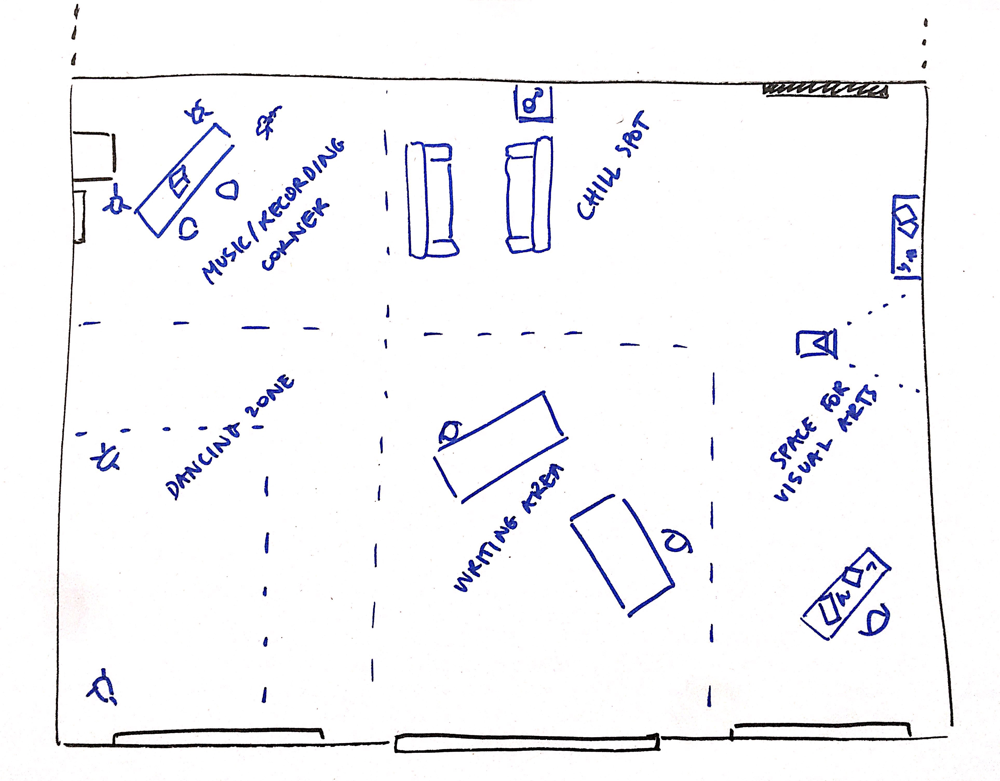
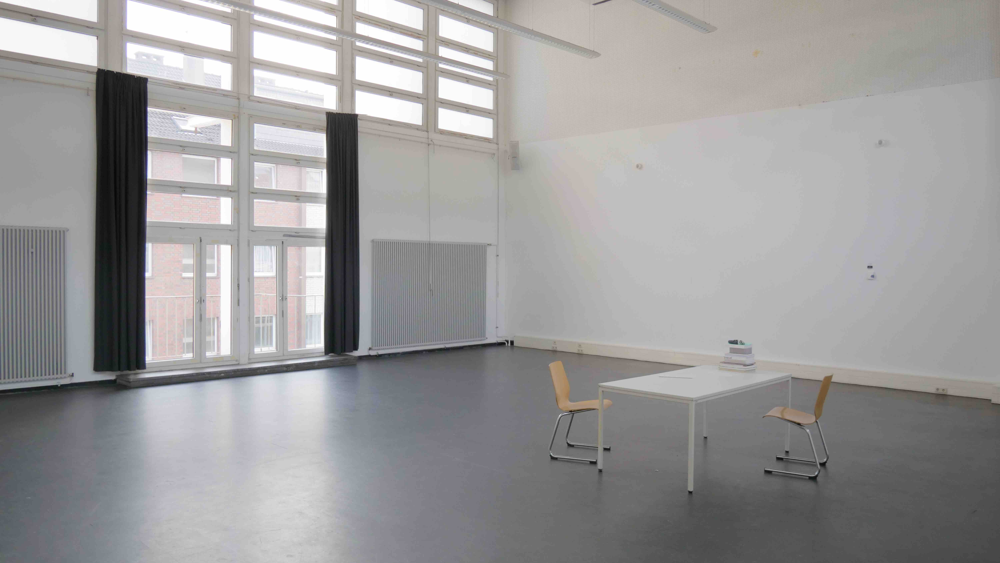
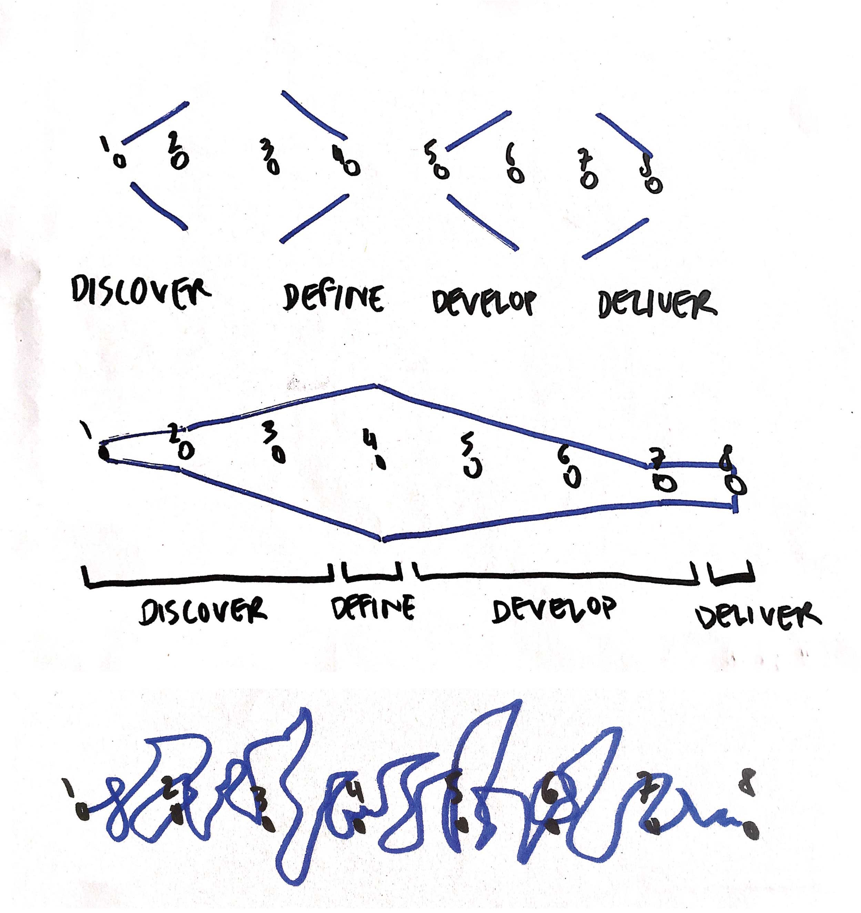
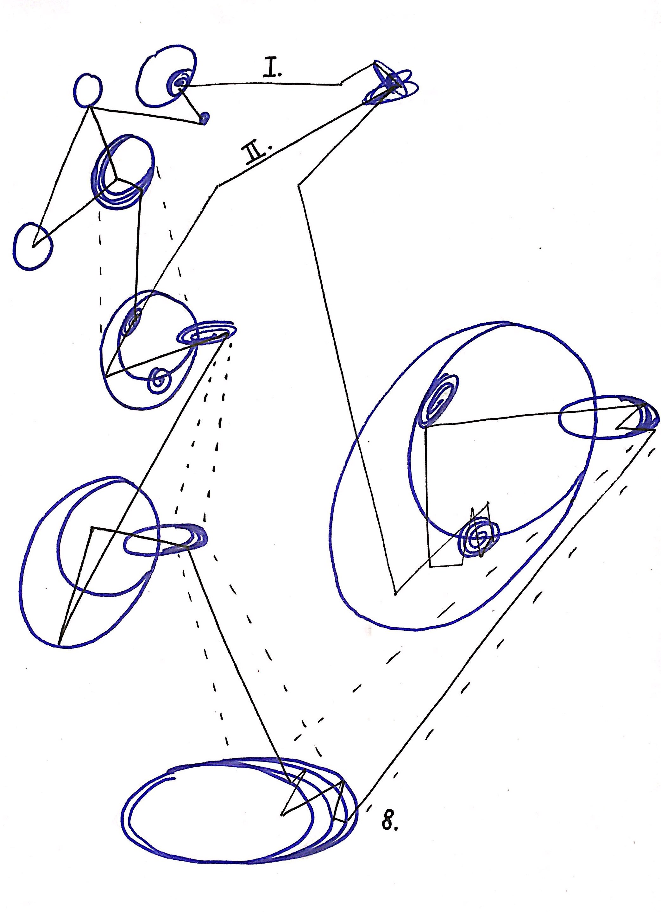

Once the individual appointments were made, Open Expression Support could begin. Now it was up to me to prepare the first session and think of a general method, or rather a pedagogical approach to apply throughout the process. In this post, I want to share my thoughts and ideas on how to organise those 8 consecutive sessions.
To start with, it makes sense to reference the original abstract in which I formulated a series of principles (and their corresponding research questions) that would inform my personal, experimental, pedagogical approach. For each of the principles, I'll share my strategy and I'll end by mentioning several assumptions, speculating about the outcome of the experiments.
1_ [Open Experimentation] Organising sufficient space and time for experimentation by creating the necessary conditions to become creative. Starting with what is present, what do people already possess?
Open experimentation. What could that mean? In my perception, it means creating a safe space in which anything is allowed to happen. To give in to a moment. To give attention to what is unattended. To hold on to something and then letting go. To remain determined to discover new things. To keep on finding new stories, new ways, new views, ... I believe that the most important condition to become experimental and expressive is safety and trust. Therefore, I ask commitment for at least 8 sessions, as trust needs to be earned and safety developed.
And then there is openness. The will to try new things, to take risks, to show yourself. And because of the mechanism of the invitation, participants require a degree of openness as the initiative and effort to reach out lies with them.
Concerning 'working with what people already possess', it seems evident to recognise what kind of meaningful experiences of expression someone already had. Forms, rituals, moments of expression that people have previously made contact with. Not to just hold on to that, but to find a beginning.
On the other hand, it is necessary to experiment within areas unfamiliar to the participant. Working with what someone already owns and feels comfortable with, can build confidence and provide safety, enough to then be exposed again to new things. To find a balance between the familiar and the new.
Thus, when a participant joins with a clear goal in mind, the intention is to both assist in reaching that goal but also to organise sufficient challenge, weirdness and out-of-the-safe zone moments. When a participant joins without a clear goal, holding firm disbelief towards their creative capabilities, the discovery phase carries greater importance.
2_ [Place Language] What does a space offer and what role does it play in allowing things to happen? What is a creative space?
The space we have access to is a big and bright room, with high ceilings and a vinyl floor, ideal for dancing. At first, I thought of organising the room along different 'creative corners'. Where I'd have a chill spot, a music corner, a dance floor, a writing area and a space for visual arts.

However, once I emptied the room, the openness and cleanliness seemed ideal to start from. As setting up the space with materials before even meeting the participants would suggest certain activities to take place. By keeping it empty with only one table and two chairs, the space affords sitting at the single table and using the full surface for walking, running, sitting, lying, dancing, drawing...

The extra equipment such as musical instruments, drawing material and recording devices, is in a neighbouring space and can be picked up any time. Keeping the space empty as default allows to support the individual processes best. The emptiness also invites to physically play with the room, serving my intention to make bodily movement a part of every session.
3_ [Lightweight Structures] How much structure is needed? Both for myself, as for the people participating. What structural elements are in place to support someone during such a trajectory? What kind of exercises/artefacts/frameworks need to be prepared to facilitate a moment? And how to treat those structures loosely?
Structure is a topic that will eventually become a major part of the investigation. But let's run through the main things I've thought about and prepared. The first structural elements were already defined when making the invitation. With slowness in mind (principle nr. 4), I have asked to commit for at least 8 individual sessions, instead of doing a single afternoon group session. 8 seemed a reasonable time commitment to demand, as it would be enough to both experiment and work towards an outcome. Having it weekly allows for ample time in between, to reflect and brew on ideas to take into the next session, both for me as for the participants. Contrarily, 8 sessions of 1,5 hours total 12 hours together, which is probably too little time to develop new creative habits.
One decision that I made from the start, and that I also mentioned in the invitation, is that we work towards an Ergebnis, an outcome. In my opinion, a crucial element when it comes to creative expression, as the ability to show 'yourself' to others makes it more meaningful and encourages to continue.
So there has to be an ending, but where to begin?

One well-described model that I have applied in the past is the double diamond, first developed by the British Design Council in 2004. The double diamond shows a designerly process consisting out of divergent thinking, opening up and exploring a theme, and convergent thinking, tying this research to concrete actions. The model is organised along four process phases; discover, define, develop, deliver. Originally, the phases are following a linear fashion but in reality, an outcome is always the start of something new.
Therefore, within the field of organisational behaviour, the model of a method called appreciative enquiry (AI) displays its phases in a circular form, assuming the process happens in cycles. Those cycles are referred to as iterations in the design process. In the model of appreciative inquiry, the consecutive phases are named discovery, dream, design, destiny.
Hmmm, sounds familiar... Although I'd like to investigate what is behind those models at a later stage and I believe that the reality looks much more like the last drawing, for my purpose, I was merely looking for inspiration on how to structure the 8 sessions. Asking myself: Should I plan every session in detail? Or just the overarching phases? Should I predefine any rituals? Would it be worth designing a poster, a map, or a little booklet that show the different steps and is easy to follow?
Having a visual and coherent model describing a process helps to align the different participants of a project. It can reduce the feeling of uncertainty, or at least give the impression of certainty, in a process where the outcome is unknown. And that's what I found myself doing, coming up with structure to cope with my uncertainty.
But then, that's exactly the point of the experiment of doing OES. To be lead by what presents itself. I decided that the (mental) exercise of predefining the process worked to appease myself, but was not something to introduce to the participants. The structure will emerge.
So let me prepare for the first session, I thought. And we'll see next week. The image below is a 'stellar' process map I have drawn, in which [ I. ] could be the route of someone who doesn't have a specific topic in mind, and [ II. ] can represent the path of someone who does. The figure next to the number [ 8. ] at the bottom, could portray the elaboration of one element to be shared in the last session, belonging to one aspect of an (infinite) medium. Stellar, I told you. ;-)

This topic will remain open. In several posts, I'll reflect and share about the structure emerging throughout the weekly sessions.
4_ [Facing Slowness] What and how long does it take for someone to ground, to rest and digest, with the present moment? How many sessions are needed to collectively get to this mode of expression? Can slowness be used as a device to provide space and time and therefore safety?
Slowness is an element to keep an eye on throughout the process, weighing up the time dimension against the initial goals and outcomes.
5_ [Making Collective] During the experimentation, I regularly want to invite different practitioners to join the process and in this way, become part of the Open Expression Support. What to learn from peers who are active in the art scene and how to include them in the project? How to convince someone to take part? What is there in return? How to make members of the public aware of OES and seek contact? And how to make them part of the ‘collective’?
In reality, it will be challenging to invite many different practitioners into the process, but I aim to at least invite some to test it out. How would that change the dynamics? The intent is to make OES go beyond me as an individual, to invite other practitioners with different skills into the process, to envision how OES could run as a collective.
Another aspect worth discussing is whether the process artefacts and works produced within OES can also be published under OES. If the participants have an interest in doing so. This will become more relevant towards the final sessions when there is output. What does 'publishing' mean? Made public in a collective physical/digital space?
6_ [Opening a process] An experimental open process, in public and to the public. Capturing experiments (with consent) and archiving selected moments in an accessible digital space. (www.openexpression.support) How to capture a moment? What format suits? With the process being the project, how to develop a good workflow of capturing and sharing work?
The blog is running, as you can see. The documentation of the various exercises will require some discipline and I need to fix the issue with authorship. The goal is to have every exercise that I've applied in the process documented online, available to all participants and anyone interested. Concerning the capturing and sharing of the individual sessions, I currently work with voice messages and a big spreadsheet to summarise the content and insights of each session.
7_ [The ignorant master - Der unwissende Meister] Following Jacques Ranciere’s belief in always starting from the equal capability of learning beings, viewing information and knowledge as announcements that everyone can do something with and make something out of each time, I want to practice such an attitude towards learning, as I am in fact, an ignorant master when it comes to this project. It’s not me that is offering coaching or therapy to my patients, clients, or users, it is David as a ‘Master student’ inviting members of the public, people, to experiment together and discover things about ourselves. To create conditions in which I, and the people that join me, will be out of control at moments, but remain open to accept the present situation.
Through the content of the invitation, I have already applied this principle by not representing myself as a professional coach, dancer or musician, but rather as an individual organising space and time for experimentation. The ability to let go of given structures and assumed roles will depend on the degree of preparation, confidence and common understanding with participants, among others.
8_ [Action/Design Research] Learning by doing through iteration, where research findings are incorporated in the practice as they are constructed. Working in cycles to: 1. study and plan, 2. take action, 3. collect and analyse results, 4. reflect and share with peers/professors to eventually execute the cycle again (and again).
What starting now is the first cycle of experiments. The idea is to do a second cycle, that can be designed with the learnings of the first cycle in mind.
9_ [Open Expression Support as an organisation] What if there was an open service that supports people in experiencing meaningful moments of creative expression? Seeing the Open Expression Support as an infinite project and possibly as designing a new public service, how to build a sustainable vision and long term strategy? What are the core activity and philosophy of such a collective? What settings can it be expanded to? Keeping the practice within the commons, how to monetize such an organisation/collective? And how can everyone involved receive a slice of the pie?
I'll have to get back to this later in the process. At the moment, I want to ask the participants for a 9th session in which we collectively envision and design Open Expression Support (Offene Ausdrucksberatung). What needs to happen for OES to become a real service? What should it be like?
Assumptions:
- Everybody has the capacity to express themselves creatively and retrieve meaning from that.
- Finding a personal creative outlet and means of self-expression builds self-esteem.
- Providing structure and developing perspective leads to more creative output.
- The ability to share the creative output with others will make it more meaningful and stimulate further activity.
- Individual processes with personal attention increase psychological safety and facilitate creative development.
- Embracing uncertainty leads to more true/original output.
- Creative agency in one medium benefits from experimentation across different media (movement/writing/drawing/acting/…)
- Bodily movement can help to ground with the present moment.
- Bodily expression furthers creative activity.
- Design methodology is suitable for supporting people in a creative process.